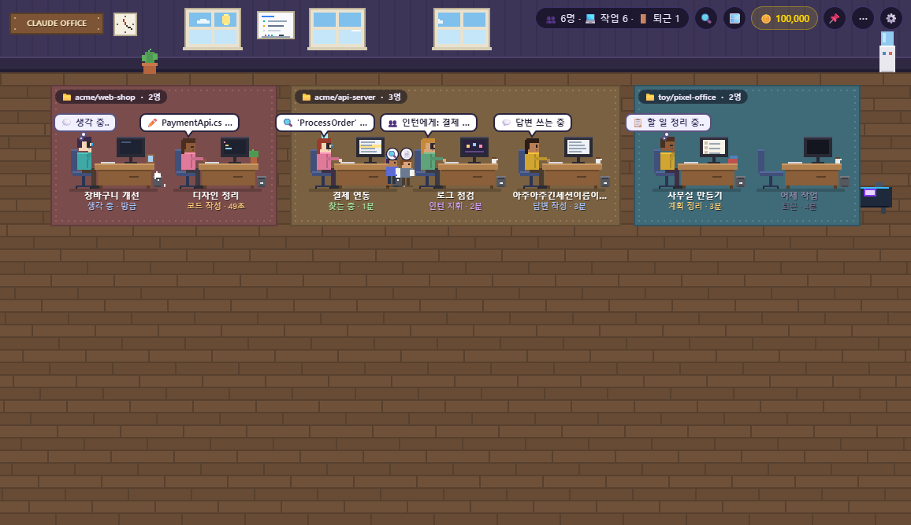
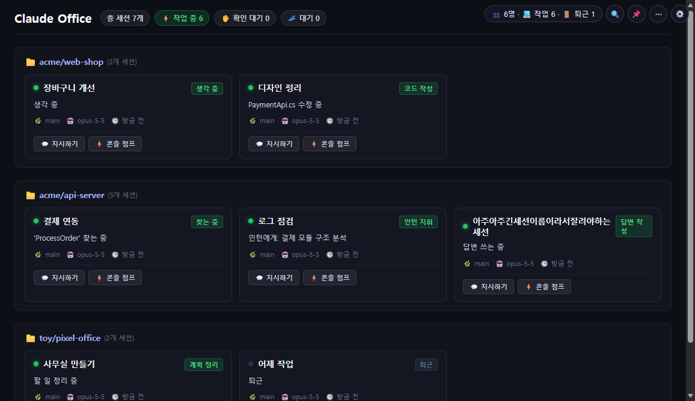
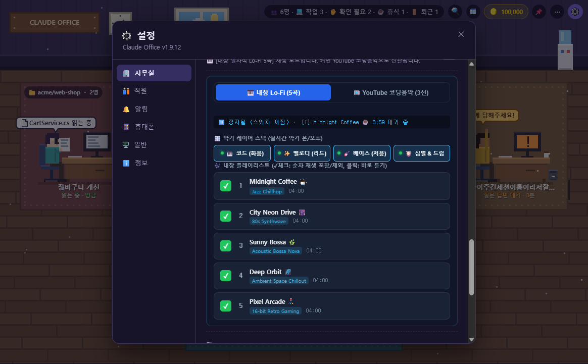
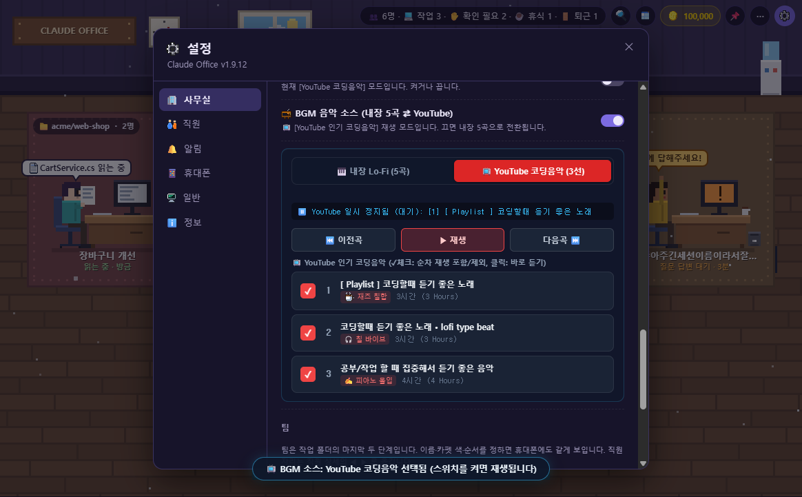
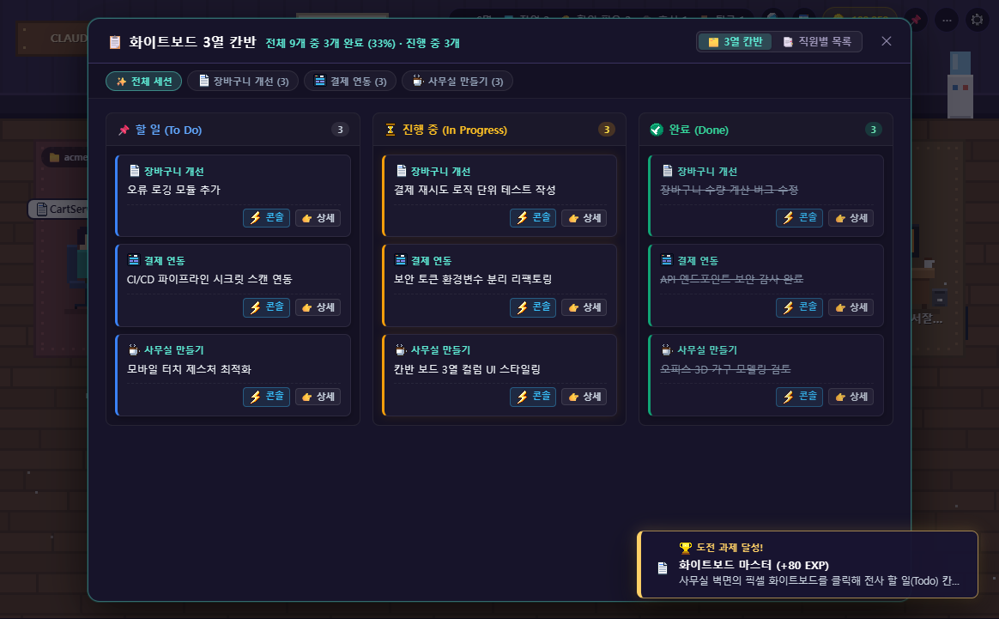
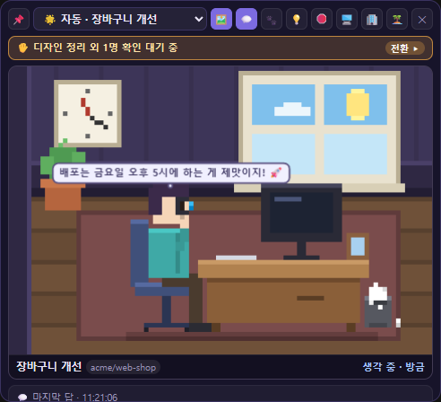
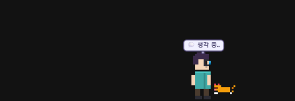
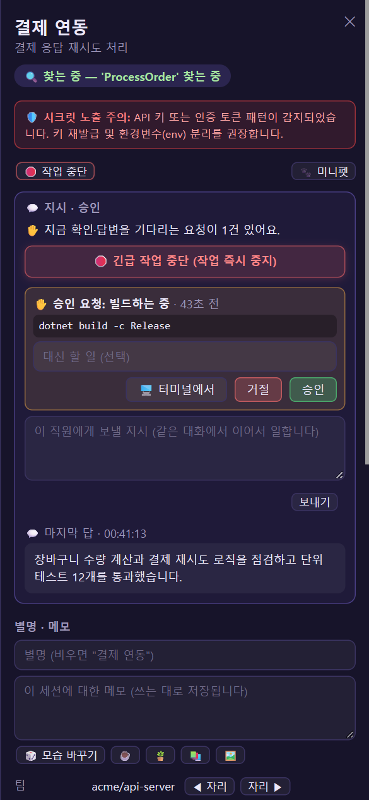

Claude Code가 지금 뭘 하는지
한눈에 보는 레트로 픽셀 사무실
See What Claude Code Is Doing
At A Glance in a Retro Pixel Office
터미널을 오갈 필요 없이, 레트로 감성의 픽셀 직원들로 세션 상태, 도구 호출, 승인 대기, Git Diff를 실시간 모니터링하세요. 5곡의 감성 Lo-Fi BGM, 고양이 키우기, 바탕화면 미니위젯, 모바일 원격 제어까지 지원합니다. Monitor Claude Code sessions, tool calls, approvals, and Git diffs in a cozy retro pixel-art office. Features 5-track procedural Lo-Fi BGM, cat adoption, desktop MiniWidget, and mobile remote control.

내 작업 환경에 맞는 2가지 화면 모드 Two Distinct Modes for Every Workflow
아기자기한 레트로 픽셀 모드와 차분한 업무용 다크톤 대시보드를 자유롭게 오갈 수 있습니다. Switch seamlessly between a cozy retro pixel-art office and a clean dark business dashboard.
🧑💻 픽셀 오피스 모드🧑💻 Pixel Office Mode
세션은 직원, 폴더는 팀 구역(카펫), 서브에이전트는 인턴 캐릭터로 시각화됩니다. 파일 읽기, 검색, 코드 작성 등 실제 수행 중인 도구가 귀여운 말풍선으로 뜹니다. Sessions appear as employees, folders as team rugs, and subagents as interns. Active tools show up in friendly pixel speech bubbles.

💼 비즈니스 대시보드 모드 (단축키 O)💼 Business Dashboard Mode (O)
도트 그래픽 없이 깔끔한 다크톤(#0d0f17) 카드 그리드로 대화 상태와 최근 작업 내역을 전문적으로 확인하고, 더블클릭으로 콘솔 창으로 즉시 점프합니다. A dot-free, dark-toned card grid view for professional offices. Double-click any card to jump right into its IDE or terminal.
몰입을 돕는 힐링 코딩 음악 플레이어 Focus-Enhancing Coding BGM Player
Web Audio 합성 기반의 내장 Lo-Fi 5곡과 검증된 YouTube 인기 코딩음악 3선을 원하는 대로 골라 들으세요. Enjoy 5 procedurally generated Web Audio Lo-Fi tracks or switch to curated YouTube coding music streams.

🎹 내장 Lo-Fi 5곡 & 4대 악기 실시간 믹서🎹 Built-in 5 Tracks & 4-Stem Live Mixer
칠합, 신스웨이브, 보사노바, 앰비언트, 16비트 레트로 아케이드까지 4분 서사의 5개 곡을 제공합니다. 코드, 멜로디, 베이스, 드럼 악기를 실시간으로 켜고 끌 수 있습니다. 5 distinct 4-minute tracks (Lo-Fi, Synthwave, Bossa Nova, Ambient, 16-Bit Arcade) with live on/off controls for chords, melody, bass, and drums.

📺 YouTube 인기 코딩음악 3선 & 체크리스트📺 Curated YouTube Mixes & Checklist
수백만 명이 듣는 인기 코딩 음악 3선을 원클릭으로 연동합니다. 수직 체크리스트의 ✓ 체크 버튼으로 원하는 곡만 골라 순차 재생하거나 바로 점프할 수 있습니다. Stream top YouTube coding playlists with a one-click source toggle. Check or uncheck tracks with ✓ to control auto-playback loop.
고양이 키우기 & 실시간 칸반 화이트보드 Cat Adoption & Real-Time Kanban Board
작업을 완료해 코인을 모으고, 고양이를 입양해 키우며, 세션 대화에서 자동으로 정리되는 화이트보드 칸반을 확인하세요. Earn coins by finishing tasks, adopt a growing desk cat, and view live Kanban cards extracted automatically from sessions.
고양이 3단계 입양 & 모니터 착석3-Stage Cat Evolution
아깽이 ➔ 캣초딩 ➔ 성묘로 자라며 책상과 모니터 위를 자유롭게 오갑니다. 클릭해 쓰다듬으면 행복한 골골송과 함께 애정 어린 생각 말풍선을 띄웁니다. Watch your kitten grow into a teen and adult cat that lounges on desks and monitor tops, purring happily when clicked.
대화 자동 분석 3열 칸반 보드Live 3-Column Kanban Board
화이트보드를 클릭하면 Claude Code 대화에서 추출된 할 일들이 To Do / In Progress / Done 카드로 실시간 분류되어 한눈에 파악됩니다. Click the whiteboard to see tasks automatically extracted from conversation transcripts into live To Do, In Progress, and Done columns.
30종 개발자 도전 과제 도감30 Challenge Badges & Titles
야간 코딩, 토큰 절약, 브로드캐스트 등 다채로운 미션을 달성하여 코인 보상을 받고 개발자 레벨업 칭호를 획득할 수 있습니다. Unlock achievements like Night Owl or Token Saver to claim coin rewards and earn prestigious developer titles.
🛋️ 11종 테마 배경 & 가구 상점🛋️ 11 Themes & Interior Shop
🌸 벚꽃, 🌿 포레스트, 🌅 노을 바다, 📚 심야 도서관 등 11종 테마 배경과 LP 턴테이블 기본 지급, 마약 빈백, 아케이드 캐비닛 등 다양한 소품을 자유롭게 배치하세요.Transform your workspace with 11 themes (Cherry Blossom, Forest, Sunset Ocean, Midnight Library, etc.), starter LP turntable, beanbags, and arcade cabinets.

📋 실시간 화이트보드 칸반📋 Whiteboard Kanban View
터미널 로그를 일일이 읽지 않아도 진행 상황과 완료된 태스크를 보드로 명확하게 추적합니다.Track deliverables and active subtasks cleanly without scrolling through raw terminal logs.
바탕화면 미니위젯 & 휴대폰 원격 제어 Desktop MiniWidget & Mobile Remote
코딩 중에는 화면 구석의 초경량 위젯으로, 외출 중에는 휴대폰으로 안심하고 작업을 관리하세요. Keep an eye on tasks with a corner widget while coding, or manage everything from your phone when stepped away.

🪟 항상 위 바탕화면 미니위젯 (대표 고양이 동반)🪟 Desktop MiniWidget (Companion Cat)
IDE 전체화면 뒤에 가려지지 않게 대표 직원을 화면 구석에 띄워 둡니다. 모니터 위에서 식빵 굽기/마우스 잡기를 하는 🐱 대표 고양이 동반, 3단계 반응형 크기 조절, 상단 44px 다이내믹 아일랜드 알약 모드, 즉각적인 콤보박스 전환을 지원합니다. Float your primary agent in the corner with a companion cat loafing on the monitor and swiping at your cursor. Features 3-tier responsive sizing, 44px top Dynamic Island, and instant switcher.

🐾 시메지 바닥 산책 & 고양이 쓰다듬기🐾 Shimeji Walk & Petting Cat
직원이 책상을 벗어나 화면 밑단을 자유롭게 산책합니다. 대표 고양이가 곁을 졸졸 따르며, 미니미가 쪼그려 앉아 다정하게 고양이를 쓰다듬어주는 심쿵 모션과 하트 방울, 쾌적하게 확보된 상단 툴바 여백을 즐겨보세요. Agents step away from their desks to roam the bottom of your screen. The companion cat follows along, while minime crouches to gently pet the purring cat with floating hearts and generous toolbar headroom.

📱 휴대폰 원격 제어 & Git Diff 사전 검토📱 Mobile Remote & Git Diff Review
QR 코드 한 번만 스캔하면 앱 설치 없이 LTE/5G 어디서나 승인 대기를 확인하고, 수정될 코드 Git Diff를 직접 검토한 후 승인/거절할 수 있습니다. 🎙️ 음성 지시와 화면 회전(가로/세로) 최적화 뷰포트를 지원합니다. Scan a single QR code to review pre-approval Git diffs, approve tool runs, speak voice prompts, and trigger emergency stops. Fully responsive with mobile rotation auto-adaptation.
내 PC에 간편하게 설치하기 Install Easily on Windows
원클릭 설치기 또는 터미널 1줄 명령어로 빠르게 설치하고 바탕화면 바로가기를 생성하세요. Get up and running in seconds with a 1-click batch installer or a single PowerShell command.
🚀 원클릭 간편 설치기🚀 One-Click Installer
다운로드된 설치기를 실행하면 PC에 안전하게 설치하고, 바탕화면에 바로가기 아이콘을 자동으로 생성해 드립니다. Downloads and installs the latest version to LocalAppData and automatically adds a Desktop shortcut icon.
- 설치 위치:
%LOCALAPPDATA%\ClaudePixelOfficeLocation:%LOCALAPPDATA%\ClaudePixelOffice - 바탕화면 및 시작 메뉴 바로가기 아이콘 생성Creates Desktop & Start Menu shortcuts
- 관리자 권한 없이 안전하게 독립 설치No admin password or UAC elevation required
⚡ 터미널 1줄 설치⚡ 1-Line PowerShell
PowerShell 콘솔에 아래 명령어를 복사해 붙여넣으면 즉시 설치 및 실행됩니다. Paste this single command into PowerShell to install and launch immediately.
irm https://jibong614.github.io/claude-pixel-office/install.ps1 | iex
📦 무설치 포터블 ZIP📦 Portable ZIP
압축만 풀어서 바로 실행하는 순수 독립 실행 파일 Extract and run immediately without any setup
최신 ZIP 다운로드 (GitHub Releases) Download ZIP from Releases자주 묻는 질문Frequently Asked Questions
Q. Claude Code와 어떻게 연동되나요? 안전한가요? Q. How does it connect to Claude Code? Is it safe?
Q. 시스템 요구사항이 어떻게 되나요? Q. What are the system requirements?
Q. 휴대폰 원격 연결 시 보안은 안전한가요? Q. Is mobile remote control secure?
#hash 뒤에만 존재하여 네트워크 패킷이나 중계 서버에 전혀 전송되지 않습니다.
Mobile communication is locked with AES-256-GCM end-to-end encryption. The decryption key exists solely in the URL hash (#) on your phone and is never sent to the relay server.